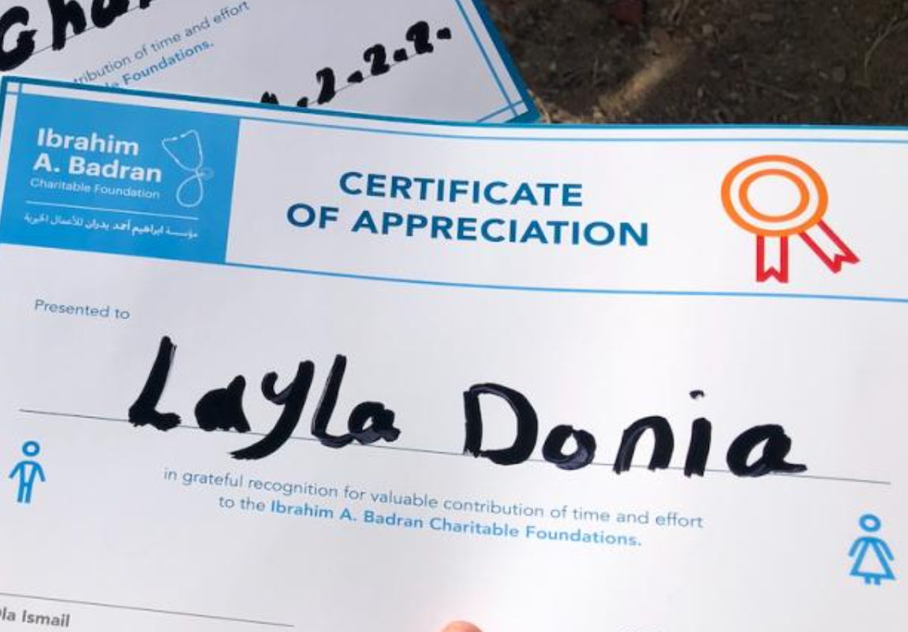
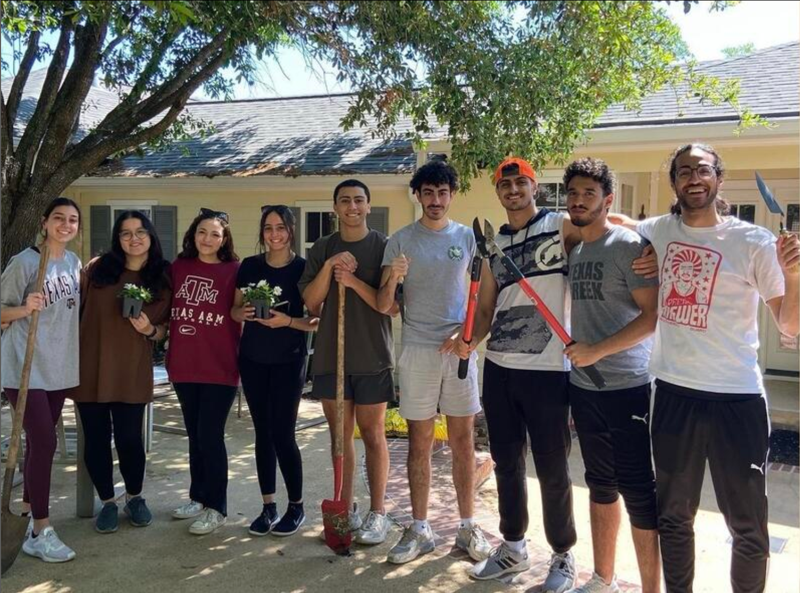
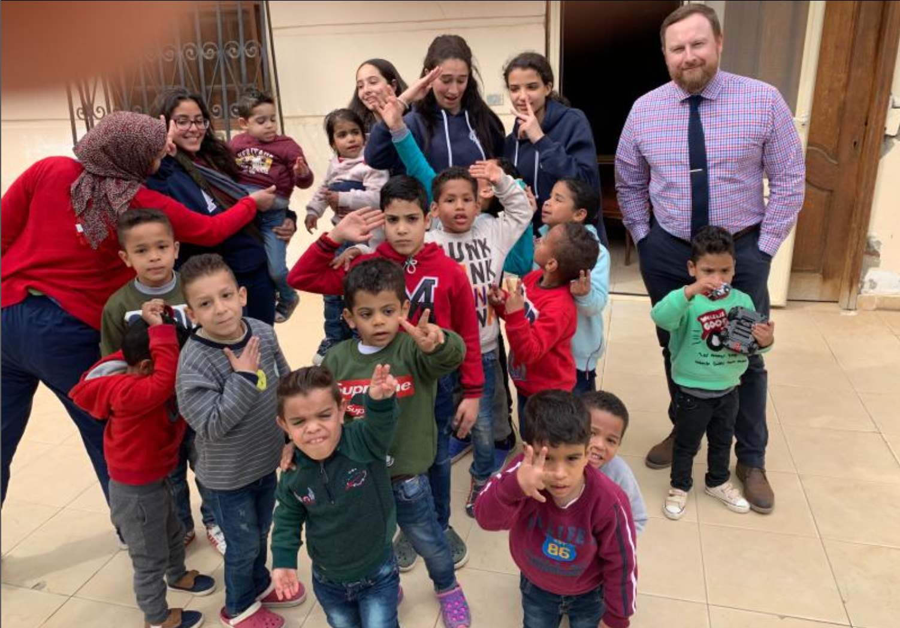
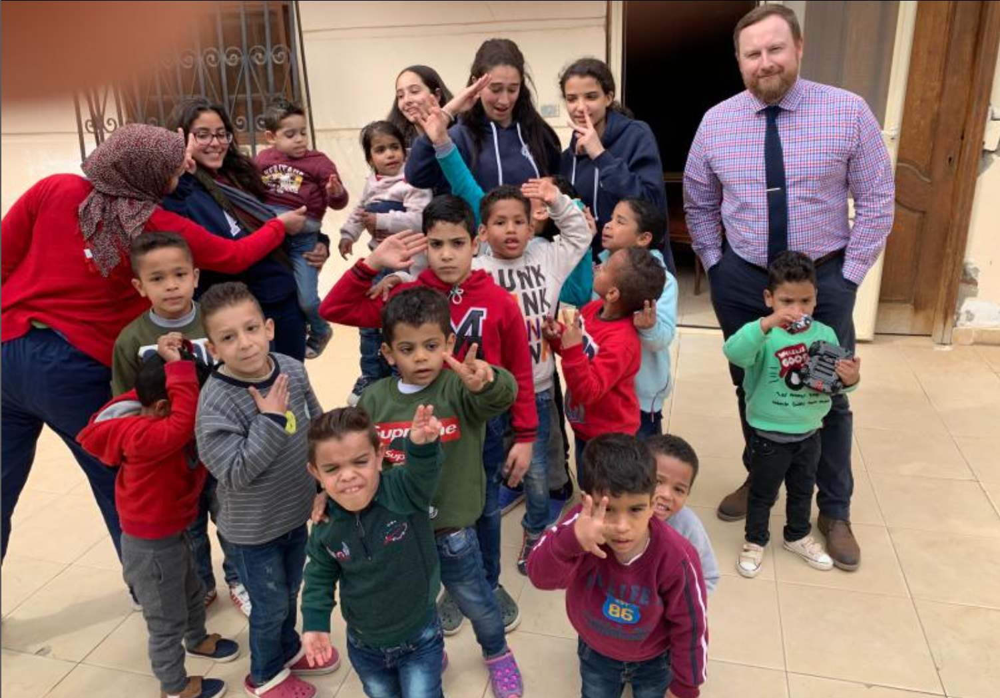
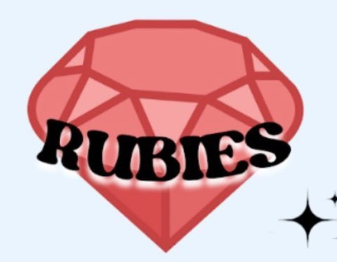
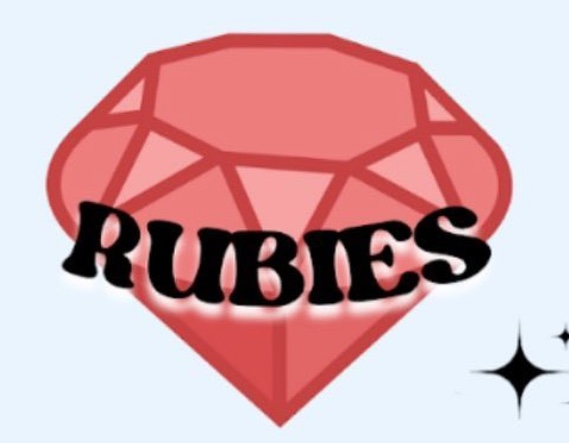

I volunteered with a medical charity foundation where I helped check in patients, write down their symptoms and instruct them of where to go at a Non-profit public hospital in the outskirts of Cairo, Egypt.
The Big Event
I participate in The Big Event yearly! The last event I participated in involved gardening, repainting a treehouse, and cleaning backyard furniture.
Visiting Al-Orman Orphanage
My friends and I helped gather important resources such as canned food, water, clothing, and books from High School peers. Then we transported the resources to the Orman orphanage and spent the day with the children there. We read them books, watched puppet shows they made, and played games with them.

My friends and I helped gather important resources such as canned food, water, clothing, and books from High School peers. Then we transported the resources to the Orman orphanage and spent the day with the children there. We read them books, watched puppet shows they made, and played games with them.
AWICS Rubies Mentor
As a current member of Aggie Women in Computer Science (AWICS), I am excited to join their Rubies program as a mentor for the upcoming school year. Last year, I participated in the program as a mentee and had a wonderful experience. I look forward to guiding a new mentee this year and providing her with the same support and encouragement that I received.

As a current member of Aggie Women in Computer Science (AWICS), I am excited to join their Rubies program as a mentor for the upcoming school year. Last year, I participated in the program as a mentee and had a wonderful experience. I look forward to guiding a new mentee this year and providing her with the same support and encouragement that I received.
